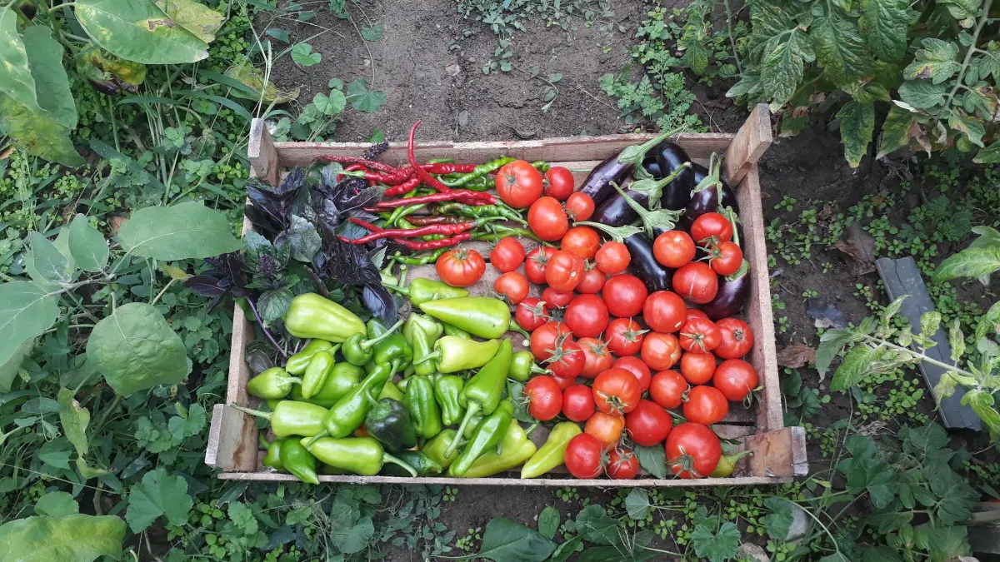
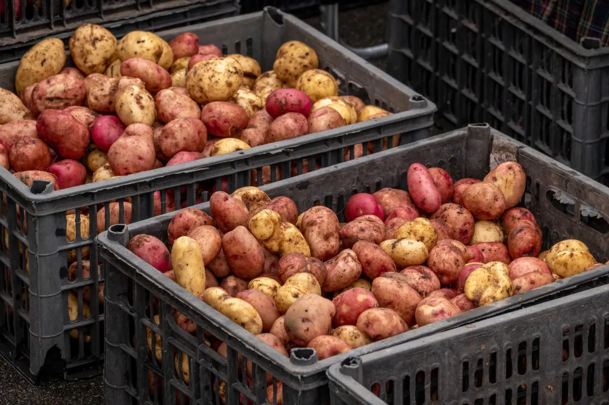

The pantry
Crates of fresh food and tins on a long table, every Thursday morning. You come in, choose what you need and fill your bag.
40bags of potatoes
52tins of tomatoes
36loaves of bread
24dozen eggs
18boxes of nappies
The facts
- When
- Thursdays, 10am to noonCome at any time in those two hours.
- Cost
- FreeNo referral and no forms.
- Where
- The main hallA long table of crates, with a trolley you can borrow.
- Who runs it
- Moana RewetiMoana runs the house, and Ana Fifita looks after the volunteers who pack.
- Who it is for
- AnyoneAbout 40 households come each week, and nobody asks you to explain.
- Bring
- A bag or twoWe have spares if you forget.
How it works
Walk in
Come at any time between ten and noon. Bring a bag or two, or take one of our spares, and borrow a trolley if you would like one.
Choose
Go along the table and take what you need. The crates hold vegetables, bread, eggs and tins, and nappies when we have them.
Take it home
Pack your bag and go. There is nothing to sign and nothing to return, and you can come again next Thursday.
What we’re short of this week
If you can spare one, carry it in on a Thursday morning and we will find it a crate. Or tell us what you are bringing and we will look out for it.
- Cooking oil
- Tinned fish
- Nappies size 4

There is no sign-up and no referral.
Nobody keeps a list and nobody asks who sent you. About forty households walk in each week, and every one of them chose their own bag.

The next four Thursdays
The house is shut from 24 December to 20 January.
10am to noon
10am to noon
10am to noon
10am to noon
Bring something
Tell us what you are bringing and we will have a crate ready. You do not have to tell us. Walking in with a bag of rice on a Thursday works just as well.
To tell us, email hello@tidestreet.example or call 04 555 0129.
To give money instead, the Give page shows what a gift buys.
Next Thursday
This is a demo, so nothing was sent.
Getting in
- Step-free from Tide Street
- A trolley you can borrow
- An accessible toilet
- Four car parks and two mobility parks at the door
- Spare bags if you forget yours